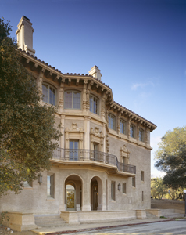

Center for Computer Research in Music and Acoustics
CCRMA | Department of Music
Stanford University
660 Lomita Dr.
Stanford, CA 94305
(google map)
for visitors:
parking is free after 4pm on weekdays, and all day on weekend.

front
courtyard
the CCRMA Stage
lounge
classroom
listening room